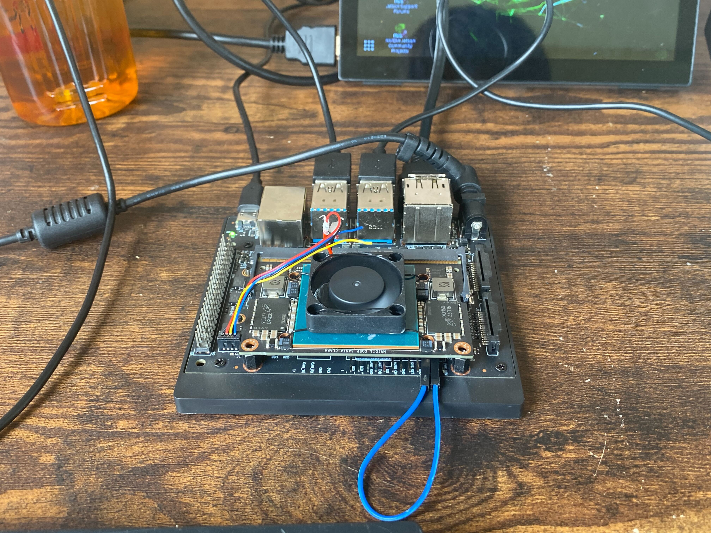
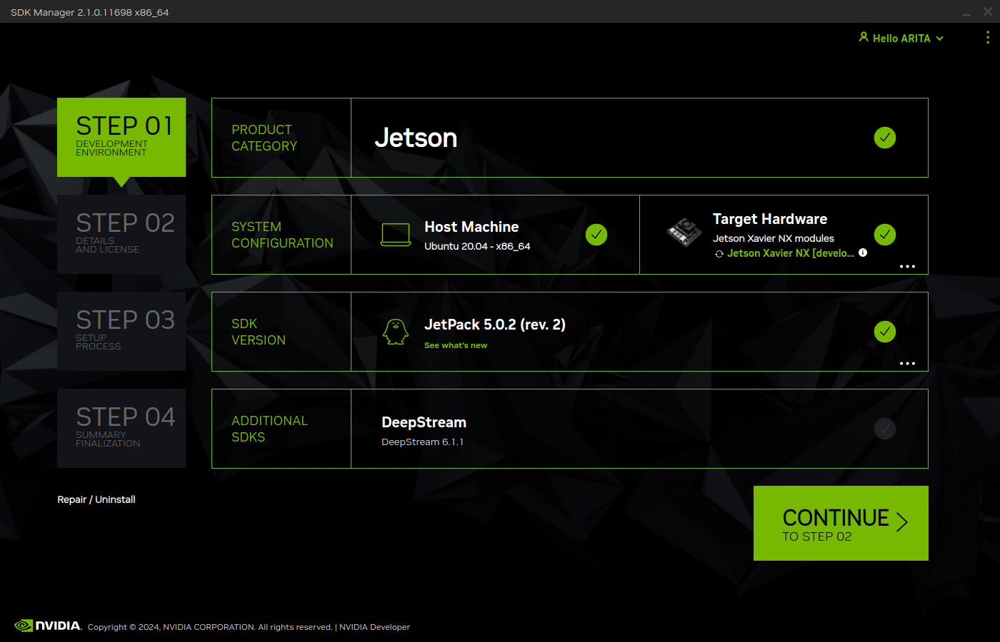
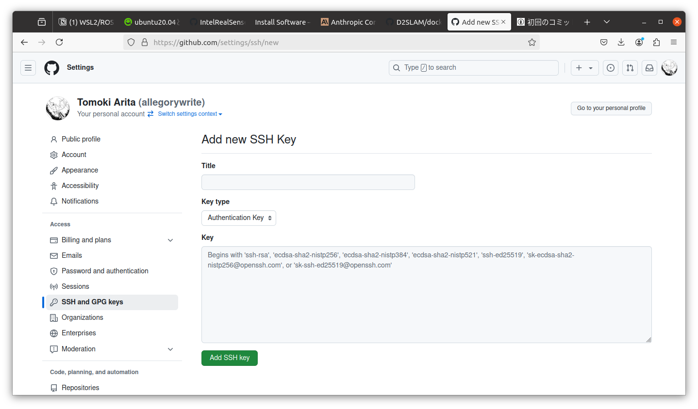

ドローンのセットアップ
Xavier NXのフラッシュ
jetsonのセットアップはdeveloper kitを使用すると容易に行うことができる。

Jetson Xavier NXのフラッシュには2通りある
pc(host)でmicroSDをフラッシュ(balenaEtcher / Jetpack5.0.2) ⇒ xavierに刺してboot
pc(host)にJetpack SDK Managerを入れる ⇒ xavierをリカバリーモードで起動しusb経由でflash
基本2が安全だがmicroSDによってはうまくできないこともあるのでそのときは使い分ける。
Jetpack SDK Managerは以下コマンドで起動する
sdkmanager --archivedversions
以下のようにJetPack 5.0.2を選択してフラッシュを行う。

Setup スクリプトの実行
Jetsonのフラッシュを行ったあと、Jetsonのterminal経由で各モジュールのセットアップを行うためのスクリプトをダウンロード、初期設定を行う。
mkdir $HOME/workspace
cd $HOME/workspace
git clone https://github.com/AgriSwarm/jetson_setup.git setup
cd setup
bash initial_setup.sh
出力されたsshの公開鍵をgithubに登録する。 
ssh -T git@github.comで接続確認を行う。
セットアップスクリプトを実行する。
bash install_jetson.sh
フライトコントローラのフラッシュ
以下操作はUbuntu PC上で行うことを推奨。フライトコントローラはHolybroのKakute H7 Miniを使用する。(他のフライトコントローラの場合はバイナリを変更する必要がある)
依存パッケージのインストール
sudo apt install dfu-util
STMCubeProgrammerをダウンロードし、インストールする。
Ardupilotバイナリのダウンロード
cd $HOME/Downloads
wget https://firmware.ardupilot.org/Copter/stable/KakuteH7Mini-Nand/arducopter_with_bl.hex
フライトコントローラのフラッシュ
Kakute H7 Miniのブートボタンを押しながらUSBケーブルを接続
dfu-util --listでデバイスが認識されていることを確認(STMCubeProgrammer)Port:USB1 ⇒ connect ⇒ specify arducopter_with_bl.hex path ⇒ check run after programming ⇒ start programming
参考動画：